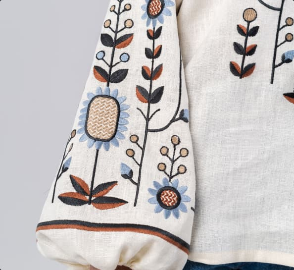
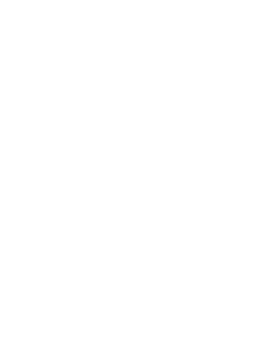

<section class="about-us">
  <div class="about container">
    <div class="about-text-container">
      <h2 class="section-title">About Us</h2>
      <p class="about-us-text">
        The store "Vyshyvanka Vibes" is a place where traditional Ukrainian
        vyshyvanka comes to life with new zest and style. Our store offers a
        wide selection of high-quality and authentic embroidery, which combines
        the elegance of traditional needlework and modern design.
      </p>
      <p class="about-us-text margin-width">
        In "Vyshyvanka Vibes" you will find various models of embroidery, from
        classic to modern, corresponding to the latest fashion trends. Our
        embroidery is made using natural fabrics and is embroidered by highly
        qualified craftsmen who convey the beauty of Ukrainian culture in every
        detail.We believe that vyshyvanka is not just clothing, but a symbol of
        national pride, the heritage of our ancestors and a way of expressing
        one's individuality. Each embroidery from "Vyshyvanka Vibes" has its own
        unique history and symbolism, which gives it a special meaning.
      </p>
    </div>
    <picture class="portfolio-picture">
        <source
        srcset="../img/about_us/about-us-dekstop-1x.jpg 1x, ../img/about_us/about-us-dekstop-2x.jpg 2x"
        media="(min-width: 1280px)"
      />
      <source
        srcset="../img/about_us/about-us-tablet-1x.jpg 1x, ../img/about_us/about-us-tablet-1x.jpg 2x"
        media="(min-width: 768px)"
      />
      <source
        srcset="../img/about_us/about-us-mob-1x.jpg 1x, ../img/about_us/about-us-mob-1x.jpg 2x"
        media="(max-width: 767px)"
      />
    
</picture>
    <div class="about-background">
        
        </div>
</div>

</section>
